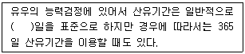
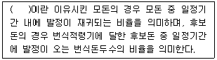
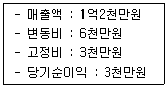
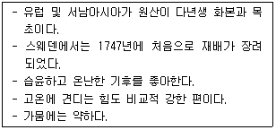
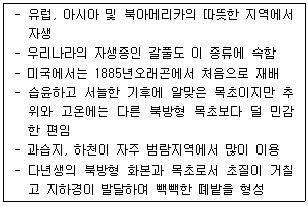
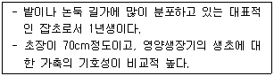
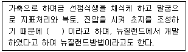
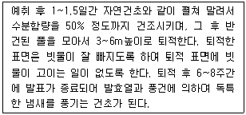

축산산업기사 (2016-03-06 기출문제)
1과목: 가축번식 육종학
1. 유우의 종모우 선발에 효과적으로 이용될 수 없는 방법은?
- 혈통선발
- 후대검정
- 개체선발
- 자매검정
(정답률: 56%)

2. 자성 성행동, 제2차성징의 유지, 유선관계의 발달, 자성 부생식기의 성장과 유지 등의 생리작용에 주로 관여하는 것은?
- GH, SRH
- LH
- 에스트로겐
- ACTH
(정답률: 71%)
3. 가축의 임신진단법 중 실험적 진단법은?
- 외진법
- 직장검사법
- 초음파진단법
- 프로게스테론 검출법
(정답률: 80%)
4. 다음 중 인공수정에 관한 설명으로 틀린 것은?
- 수태율이 저하된다.
- 특별한 기술자 및 설비가 필요하다.
- 종모축의 유전능력을 조기에 판정할 수 있다.
- 자연교미보다 조작에 있어 시간이 더 걸린다.
(정답률: 78%)
5. 다음 중 암탉이 알을 품거나 병아리를 기르는 성질은 무엇인가?
- 조숙성
- 취소성
- 산란강도
- 동기휴산성
(정답률: 79%)
6. 다음 중 산란계의 선발요건에 알맞은 것은?
- 다산일것
- 알의 단위생산량에 대하여 사료가 많이 필요할 것
- 몸 크기를 크게할것
- 알 무게가 가벼울 것
(정답률: 81%)
7. 돼지의 경제형질이 아닌 것은?
- 복당 산자수
- 이유시 체중
- 도체의 품질
- 모색
(정답률: 82%)
8. 빈축돼지의 춘기발동의 시기는?
- 5 ~ 8개월령
- 9 ~ 10개월령
- 11 ~ 12개월령
- 13 ~ 14개월령
(정답률: 66%)
9. 다음 중 유우의 가장 중요한 개량목표에 해당되는 것은?
- 산유능력
- 일당정체량
- 사료효율
- 성성숙 단축
(정답률: 81%)
10. 다음 중 소의 평균 발정주기 일수로 가장 적합한 것은?
- 18일
- 21일
- 28일
- 30일
(정답률: 72%)
11. 호르몬의 명칭과 생산부위가 다르게 짝지어진 것은?
- 에스트로겐 : 난소
- 프로게스테론 : 난소
- FSH : 뇌하수체 전엽
- 옥시토신 : 뇌하수체 전엽
(정답률: 79%)
12. 다음 중 빈칸에 알맞은 내용은?

- 2⑤
- 255
- 3⑤
- 355
(정답률: 83%)
13. 다음 중 계절주기를 나타내는 계절번식 동물은?
- 소
- 돼지
- 말
- 토끼
(정답률: 77%)
14. 다음 중 선발의 가장 중요한 목표인 것은?
- 유전자 빈도의 변화
- 새로운 유전자의 창조
- 우량 종축의 도태
- 주요 경제 형질의 개량
(정답률: 70%)
15. 돼지의 1대 잡종생산에 많이 쓰이는 어미돼지의 종은?
- 폴랜드 차이나
- 햄프셔
- 랜드레이스
- 두록(=듀록)
(정답률: 75%)
16. 성성숙에 영향을 끼치는 요인으로서 환경적 요인이 아닌 것은?
- 품종
- 영양
- 계절
- 온도
(정답률: 77%)
17. 면양의 배란이 일어나는 시기는?
- 발정개시 후 10~25시간
- 발정개시 후 25~30시간
- 발정종료 후 10~25시간
- 발정종료 후 25~30시간
(정답률: 49%)
18. 젖소의 경제형질 중에서 유전력이 가장 높은 것은?
- 유지율
- 비유량
- 번식능률
- 생산수명
(정답률: 68%)
19. 근친교배에 의하여 젖소에 나타나는 증상이 아닌 것은?
- 후구마비
- 관절강직
- 4위 전위증
- 사산
(정답률: 64%)
20. 돼지의 등지방층의 두께를 측정하는 방법 중 Hazel, Kline에 의하 고안된 방법으로 측정부위에 알코올로 소독한 다음 사용하는 것은?
- Lean meter
- ultrasonic machinery
- probe ruler
- heritability machinery
(정답률: 68%)
2과목: 가축사양학
21. 유지에너지의 요구량과 관계있는 인자에 대한 설명 중 틀린 것은?
- 방목지의 초질과 초량에 따라 운동량에 차이가 있으므로 에너지요구량에 차이가 있다.
- 외부온도가 떨어지면 에너지 요구량에 영향이 있다.
- 임계온도는 같은 가축에서 연령에 따라 차이가 없으므로 에너지요구량도 차이가 없다.
- 단백질 함량이 많은 사료는 열량증가량이 많으므로 유지에너지 양도 증가한다.
(정답률: 81%)
22. 닭사료에 식염은 몇 %가 적당한가?
- 0.1 %
- 0.3 %
- 0.8 %
- 10 %
(정답률: 64%)
23. 비타민 B12 성분인 미량 광물질은?
- 요오드 I
- 철 Fe
- 구리 Cu
- 코발트 Co
(정답률: 68%)
24. 다음 중 케이지용 급이기가 아닌 것은?
- 디스크식 급이기
- 호퍼식 급이기
- 원통형 급이기
- 링크 체인식 급이기
(정답률: 68%)
25. 다음 중 주성분의 분류가 옳지 않은 것은?
- 단백질 사료 - 어분, 우모분
- 단백질 사료 - 그리스, 라아드
- 전분질 사료 - 곡류, 고구마
- 섬유질 사료 - 목초, 볏짚
(정답률: 81%)
26. 다음 중 펠렛사료의 장점이 아닌 것은?
- 사료섭취향이 증가된다.
- 사료의 허실이 적다.
- 음수량이 증가한다.
- 지용성 비타민 산화속도가 느리다.
(정답률: 61%)
27. 육계를 한꺼번에 입식하고 한꺼번에 출하함으로써 질병의 사이클을 차단하는 사양관리 시스템은?
- 강정사양
- 제한사양
- 올인 올아웃사양
- 기별사양
(정답률: 86%)
28. 육종종계의 점등관리에 대한 설명으로 가장 알맞은 것은?
- 점등관리의 목적은 계군의 성성숙을 동기화 하고 산란을 촉진하기 위해서이다.
- 초산할 때 최초로 점등을 늘려주며 이때 점등강도도 높여준다.
- 육성기에는 점등시간을 늘리고 산란기에는 점등시간을 줄여주는 것이 원칙이다.
- 계군의 산란율이 50%에 도달할 때 최소 8시간 이상을 점등하여야 한다.
(정답률: 75%)
29. 육성 비육시 성장형태의 3단계가 순서대로 맞는 것은?
- 골격최대성장기 → 근육최대성장기 → 지방최대축적기
- 근육최대성장기 → 골격최대성장기 → 지방최대축적기
- 지방최대축적기 → 근육최대성장기 → 골격최대성장기
- 골격최대성장기 → 지방최대축적기 → 근육최대성장기
(정답률: 77%)
30. 비육돈에 에너지 수준을 증가하면?
- 등지방 두께가 얇아진다.
- 등지반 두께가 두꺼워진다.
- 살코기 비율이 증가한다.
- 배장근 단면적이 증가한다.
(정답률: 71%)
31. 육계 계군의 6주령(42일령) 때의 평균체중이 2200g이고, 생존율이 97%, 사료요구율이 1.8이면 이 계군의 생산성지수(PI)능 얼마인가? (단, 소수점 2째자리에서 반올림)
- 23.2
- 28.2
- 232.3
- 282.3
(정답률: 53%)
32. 비유중인 젖소의 경우 다량의 농후사료 급여로 인해 발생하는 결과가 아닌 것은?
- 유당이 증가한다.
- 유량이 증가한다.
- 유지방 함량이 증가한다.
- 단백질의 함량은 변화가 없다.
(정답률: 48%)
33. 자돈 빈혈증이 발생되는 원인은 다음 중 어느 영양소가 부족되기 때문인가?
- 비타민 D
- 칼슘
- 철분
- 비타민 A
(정답률: 82%)
34. 브로일러 초생추의 NRC단백질 요구량은 얼마인가?
- 8%
- 12%
- 18%
- 23%
(정답률: 51%)
35. 다음 영양소 중 한우의 비육시 별도로 공급해 주지 않아도 되는 것은?
- 비타민 A
- 마그네슘
- 비타민 D
- 리보플라민
(정답률: 69%)
36. 일반적으로 탄소, 수소, 산소, 질소, 황, 인으로 구성되어 있는 영양소는?
- 단백질
- 탄수화물
- 지방
- 전분
(정답률: 67%)
37. 소화관 용적의 60% 이상을 맹장 및 대장이 차지하고 있고 또한 잘 발달된 가축은?
- 수소
- 돼지
- 닭
- 말
(정답률: 67%)
38. 유지방의 합성에 가장 영향을 많이 미치는 지방산은?
- 아세틱 에시드
- 프로피오닉 에시드
- 부틸릭 에시드
- 미리스틱 에시드
(정답률: 72%)
39. 비유중인 젖소(체중 600Kg)의 유지를 위한 일일 단백질 요구량은?
- 약 200g
- 약 300g
- 약 350g
- 약 500g
(정답률: 50%)
40. 닭의 광선관리방법 중에서 육추시에는 일장시간을 단축하여 성성숙을 억제로 조숙을 방지하고 산란기에는 일장시간을 연장하여 산란율을 높이는 점등방법은?
- 일정시기점등법
- 고정점등법
- 간헐점등법
- 점감점증법
(정답률: 61%)
3과목: 축산경영학
41. 다음 중 부업경영에 관한 설명으로 틀린 것은?
- 생산량이 적기 때문에 시장경쟁력이 약하다.
- 기술 및 생산력의 저하로 발전성이 없는 정체적인 경영이다.
- 농산물 중의 부산물과 생산물의 자급활용이 가능하다.
- 방역 및 가축개량에 효과적이다.
(정답률: 59%)
42. 다음 중 축산경영을 조직할 때 적정 규모에 해당되는 것은?
- 단위단 조수익의 최대, 단위당 한계비용 최저
- 단위당 평균비용 최저, 단위당 평균이윤의 최대
- 단위당 한계수익의 최대, 단위당 변동비의 최저
- 경영자본 이익률의 최다, 단위당 고정비의 최저
(정답률: 57%)
43. 다음 중 자본재에 관한 설명으로 옳지 않은 것은?
- 경제적 관점에서 유형자본재와 무형자본재로 구분된다.
- 축산물을 생산하기 위하여 투입하는 토지 이외의 물질적 경제재를 의미한다.
- 생산 및 유통과정을 통해 운영되는 화폐가치의 총액을 의미한다.
- 자본재 존속기간의 장,단에 의하여 고정자본재와 유동자본재로 구분된다.
(정답률: 60%)
44. 다음 중 양계경영의 육성률을 가장 옳게 설명한 것은?
- 총증체량 / 총사육일수
- 연중 총 산랑량 / 연중 총 산란개수
- (성계 출하수수/입추수수) × 100
- (총 산란개수/성계 상시 사육두수) × 100
(정답률: 68%)
45. 다음 중 축산경영조직의 성립에 영향을 미치는 요인으로 옳지 않은 것은?
- 자연적 조건
- 시장의 입지
- 경제적 거리
- 고용할 목부의 능력
(정답률: 79%)
46. 다음 중 자돈생산비에 속하는 것은?
- (종돈사육비용+자돈육성비용)/이유자돈수
- (종돈사육비용+자돈육성비용)/포유자돈수
- (종돈사육비용-자돈육성비용)/이유자돈수
- (종돈사육비용-자돈육성비용)/포유자돈수
(정답률: 60%)
47. 축산경영주직의 적정화를 도모하고자 할 때 가장 먼저 고려해야 할 사항은?
- 가축의 적정 사육규모
- 가축의 생산능력
- 노동력의 기계화
- 입지조건의 적합여부
(정답률: 64%)
48. 구입한지 2년이 된 트랙터의 구입가격은 20,000,000원 이고 내용년수는 10년이며, 잔존가격은 구입가격의 10%라 한다. 이때의 연간 감가상각비를 정액법으로 계샇나면 얼마인가?
- 1,800,000원
- 2,000,000원
- 2,250,000원
- 3,000,000원
(정답률: 72%)
49. 다음 중 토지에 대한 감가상각을 하지 않는 주된원인은?
- 배양력
- 불가증성
- 불가동성
- 불소모성
(정답률: 79%)
50. 다음은 축산경영진단 시 알아두어야 할 내용이다. 빈 킨에 알맞은 내용은?

- 번식회전율
- 분만율
- 수태율
- 발정률
(정답률: 66%)
51. 생산요소의 일부를 한 생산물 생산에서 다른 생산물의 생산을 위해 사용함으로써 두 생산물이 모두 증가하는 생산물 결합 형태는 무엇인가?
- 경합생산물
- 보합생산물
- 보완생산물
- 결합생산물
(정답률: 59%)
52. 다음 중 기업적 축산경영의 특징으로 가장 옳은 것은?
- 노동보수를 최대화
- 고용노동 중심
- 경영과 가계의 미분리
- 가족노동 중심
(정답률: 79%)
53. 다음 한계생산물과 평균생산물의 관계에 대한 설명중 틀린 것은?
- 평균생산물이 최대가 되는 경우 한계생산물은 최대가 됨
- 한계생산물이 평균생산물 보다 클 경우 평균 생산물은 증가함
- 한계생산물이 평균셍산물보다 작을 경우 평균생산물은 감소함
- 함계생산물이 평균생산물과 동일할 경우 평균생산물은 최대가 됨
(정답률: 50%)
54. 다음 중 고용노동의 특성이 아닌 것은?
- 비자율적 노동
- 상품으로서의 노동력
- 정신노동과 육체노동의 기능상 분화
- 노동성과에 대한 책임부담
(정답률: 64%)
55. 다음 중 경영계획 순서로 옳은 것은?
- 계획-통제-분석-평가-조직-조사-운영-계획
- 계획-조직-조사-운영-통제-평가-분석-계획
- 계획-조사-운영-평가-통제-조직-분석-계획
- 계획-조직-운영-평가-통제-조사-분석-계획
(정답률: 59%)
56. 다음 중 축산경영비에 포함되지 않는 항목은?
- 감가상각비
- 구입사료비
- 차입자본이자
- 자기토지자본용역비
(정답률: 55%)
57. 축산경영의 고정자산 평가에 있어서 일반적이며 기초로 하는 평가법은?
- 시가평가법
- 최득원가평가법
- 시장가격평가법
- 추정가격평가법
(정답률: 59%)
58. A 목장의 손익분기점에서의 매출액은 얼마인가?

- 6천만원
- 8천만원
- 1억1천만원
- 1억2천만원
(정답률: 71%)
59. 다음 중 대차대죠표를 기초대차대조표와 기말대차대조표로 나눌 때 기초대차대조표로만 나열된 것은?
- 결산서, 경영성
- 결산서, 부채
- 자산, 경영성
- 자산, 부채
(정답률: 75%)
60. 다음 중 고정자본재에 해당하는 것은?
- 사료
- 비료
- 비육우
- 종계
(정답률: 68%)
4과목: 사료작물학
61. 다음 중 건초제조의 장점이 아닌 것은?
- 수분함량이 적으로므 운반과 취급이 편리하다.
- 태양건조시 비타민 D 함량이 높아진다.
- 정장제로서의 효과가 있어 설사를 방지한다.
- 사일리지보다 영양분의 손실이 적다.
(정답률: 73%)
62. 오차드그라스의 잎과 엽초에 발생하며, 처음이는 잎 표면에 직경 0.5~1mm정도의 원형이나 타원형의 수색반점이 퍼지나, 나중에 식물이 성숙하게 되면 암흑색의 반점이 되며, 자레게 되면 이것이 파열되어 수색 도는 흑색의 가루를 날리게 되는 병은?
- 진균병
- 잎썩음병
- 도열병
- 검은녹병
(정답률: 78%)
63. 화본과 목초의 일반적 특성에 관한 설명으로 거리가 먼 것은?
- 잎은 나란히 맥으로 되어 있고 잎집, 잎몸, 잎혀 등으로 구성되어 있다.
- 줄기는 대체로 속이 비어 있고 뚜렷한 마디가 있다.
- 열매는 씨방벽에 융합된 하나의 종자가 있다.
- 뿌리는 하나로 되거나 가지를 친 곧은 부리로 되어있다.
(정답률: 60%)
64. 겉뿌림법의 초지조성 순서로 옳은 것은?
- 복토(갈퀴질) - 장해물제거 – 파종상준비 – 시비 – 겉뿌림파종 - 조성 후 관리
- 파종상 준비 – 복토(갈퀴질) - 시비 – 겉뿌림파종 - 장해물제거 - 조성후 관리
- 시비 – 장해물제거 – 파종상준비 – 겉뿌림파종 – 복토(갈퀴질) - 조성후 관리
- 장해물제거 – 파종상준비 – 시비 – 겉뿌림파종 – 복토(갈퀴질) - 조성후 관리
(정답률: 69%)
65. 다음에 설명하는 것은?

- 오차드그라스
- 메도우페스큐
- 켄터키블루그라스
- 이탈리안 라이그라스
(정답률: 43%)
66. 방목지에서의 가축은 목초를 채식하는것과 함께 분뇨를 배설하게 되고 분뇨가 떨어진 주변은 채식하지 않아서 다론곳보다 목초가 무성하게 되는데, 이러한 곳을 무엇이라 하는가?
- 청소베기
- 물식과번지
- 윤작
- 주위작
(정답률: 64%)
67. 다음에서 설명하는 것은?

- 리이드캐너리그라스
- 버즈풋트레포일
- 코먼 라이그라스
- 옥수수
(정답률: 59%)
68. 다음에서 설명하는 식물은?

- 가래
- 벗풀
- 메꽃
- 바랭이
(정답률: 60%)
69. 다음 중 저 수분 사일리지에 대한 내용으로 틀린 것은?
- 발효가 억제되어 pH가 높고 건물손실량이 적다.
- 저장과 사양을 위한 기계화가 쉬워 사일리지를 위주로 하는 사양프로그램에 알맞다.
- 침출액에 의한 건물손실이 없고 겨울에 질병의 염려가 적다.
- 공기와 접촉해도 2차발효를 일으키지 않는다.
(정답률: 72%)
70. 다음 중 윤작의 장점에 해당되지 않는 것은?
- 연작으로 인한 수량의 감소를 줄일 수 있다.
- 모든 작물의 파종시기를 임의로 결정할 수 있다.
- 토양내의 양분을 최대한 이용할 수 있다.
- 병충해의 발생을 줄일 수 있다.
(정답률: 66%)
71. 일반적으로 건초조제중 건물손실이 가장 많은 것은?
- 기계에 의한 손실
- 저장에 의한 손실
- 호흡에 의한 손실
- 용달에 의한 손실
(정답률: 72%)
72. 다음 중 경운초지의 특징으로 틀린 것은?
- 경운함으로써 경사지에서는 표토가 유실될 위험이 줄어든다.
- 경운함으로써 선점식생을 제거할 수 있어 초지조성이 쉽다.
- 단기간에 목초지화를 기대할 수 있고, 단위면적당 수량이 많다.
- 초지를 관리, 수확하는데 기계작업이 용이하여 작업능률을 올릴 수 있다.
(정답률: 59%)
73. 다음 중 파종상의 구비조건으로 틀린 것은?
- 선점식생인 야초 및 관목류가 깨끗이 제거되어야 한다.
- 파종상은 토양수분이 적당해야 한다.
- 발아 후 유식물의 뿌리 발달이 좋도록 통기와 배수가 잘되어야 한다.
- 표토는 거칠게 하여 파종과 복토가 쉬워지게 한다.
(정답률: 79%)
74. 다음 중 빈칸에 알맞은 내용은?

- 파구조파법
- 제경법
- 조경조파법
- 점파법
(정답률: 70%)
75. 다음 중 다년생 사료작물은?
- 이탈리안라이그라스
- 크림슨클로버
- 라디노클로버
- 버클로버
(정답률: 50%)
76. 다음 미생물 중에서 양질의 사일리지를 만들게 하고, 안전하게 재료를 보존하게 하는 세균은?
- 초산균
- 낙산균
- 젖산균
- 사상균
(정답률: 75%)
77. 다음에서 설명하는 내용은?

- 기계화건조법
- 가건조법
- 갈색건초조제법
- 포장건조법
(정답률: 68%)
78. 옥수수 작물의 후작으로 적합한 유채의 파종적기는?
- 6월상순
- 8월상순
- 9월상순
- 11월상순
(정답률: 68%)
79. 다음 중 포아풀아과에 해당하지 않는 것은?
- 스무스브롬그라스
- 레드페스큐
- 레스큐그라스
- 빅트레포일
(정답률: 51%)
80. 분쇄하지 않은 목초를 성형하고, 형상은 지름과 길이가 거의 동일한 성형건초의 종류는?
- 펠릿(pellet)
- 콥(cob)
- 웨이퍼(wafer)
- 큐브(cube)
(정답률: 60%)